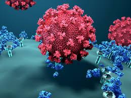
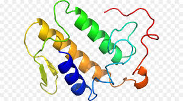

▶ Category
면역학
생리학
생화학
미생물학
면역학

요즘 가장 핫한 이슈중 하나가 "COVID-19" 아닐까요?
그러한 바이러스 중에서도 RNA 바이러스가 왜 무섭고
새로 개발된 RNA 백신이 왜 효율이 뛰어나며, 왜 위험한지
그런것들을 이해할 수 있는 학문이라 생각합니다 :)
생리학
제가 배운 과목들 중에서 가장 어려우면서 가장 재밌었는데요.
생리학은 우리 몸에 대해, 그 중에서도 기능에 대해 연구하는 학문입니다.
근육, 신경, 뇌 등 다양한 생물학적 기능에 대해 배웁니다.
생화학

생화학은 생물학의 근본이라 생각하는데요.
살아있는 생물체 내에서 그리고 생물체와 관련된
화학적 과정에 대해 연구하는 학문을 뜻합니다.
굉장히 범위가 넓은데, 그러다보니 다른 분야들과도 상당수 겹칩니다.
그러니 생화학은 꼭 다 이해하고 다른 학문들을 공부해야겠죠? ^_^
미생물학
미생물학은 미생물에 관해 연구하는 생물학의 한 분야를 뜻합니다.
면역학과 밀접한 분야라고 생각합니다.
이처럼 각각의 분야들이 서로간에 겹치는 부분들이 많기 때문에
어느것 하나 소홀히 공부해선 안되겠죠?
위에서 설명한 분야 외에도
유전학, 물리화학, 줄기세포공학, 세포조직배양공학, 세포생물학, 분자생물학 등
다양한 학문들을 배우고있습니다.
의생명공학과 홈페이지 바로가기